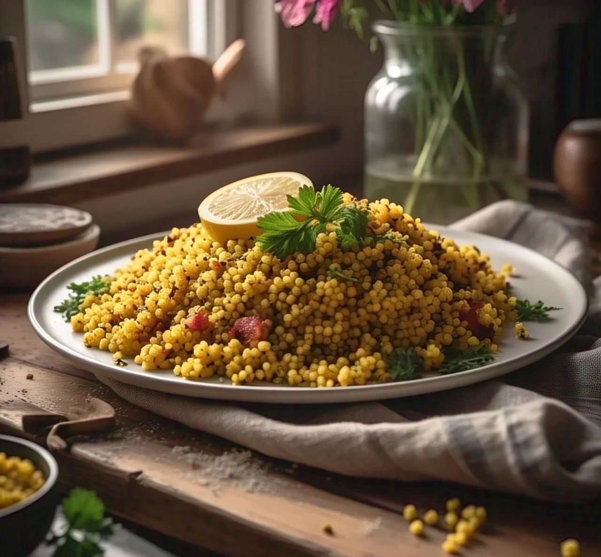
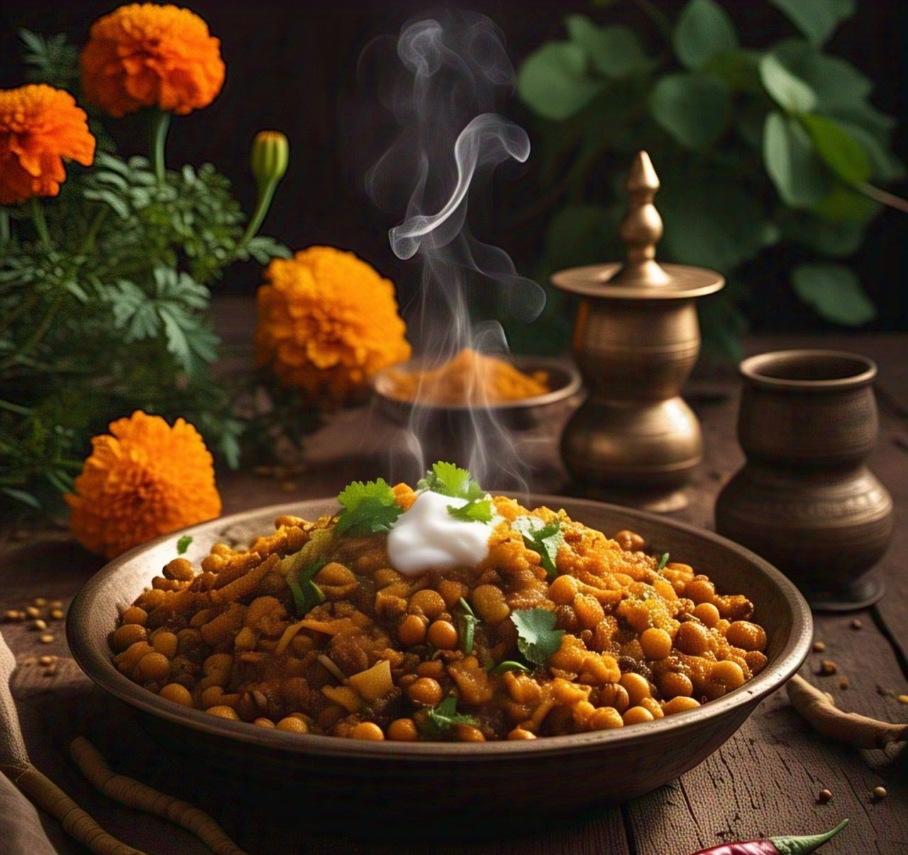

Enjoy different Millets recipes
Millets
Ingredients:
- 1 cup mixed millets (foxtail, barnyard, or pearl millet)
- 2 cups water
- 1/2 tsp salt
- 1/2 tsp cumin seeds
- 1 tbsp ghee or oil

Recipe:
- Rinse the millets thoroughly and drain.
- Heat ghee in a pan, add cumin seeds, and let them splutter.
- Add the rinsed millets and sauté for a minute.
- Pour in water, add salt, and bring to a boil.
- Cover and simmer for 10-15 minutes until the millets are cooked and water is absorbed.
- Fluff with a fork and serve hot.
Chana Usal
Ingredients:
- 1 cup soaked black chana (chickpeas)
- 1 onion (finely chopped)
- 1 tomato (finely chopped)
- 2 green chilies (chopped)
- 1 tbsp ginger-garlic paste
- 1/2 tsp mustard seeds
- 1/2 tsp turmeric powder
- 1 tsp red chili powder
- 1 tsp garam masala
- 1 tbsp oil
- Salt to taste
- Fresh coriander leaves for garnish

Recipe:
- Heat oil in a pan, add mustard seeds and let them splutter.
- Add chopped onions and green chilies, sauté till onions turn golden.
- Add ginger-garlic paste and cook until the raw smell disappears.
- Add tomatoes, turmeric, red chili powder, and salt. Cook until tomatoes soften.
- Add soaked black chana and enough water. Cover and simmer for 15-20 minutes.
- Finish with garam masala and garnish with fresh coriander leaves.
- Serve hot with rice or roti.